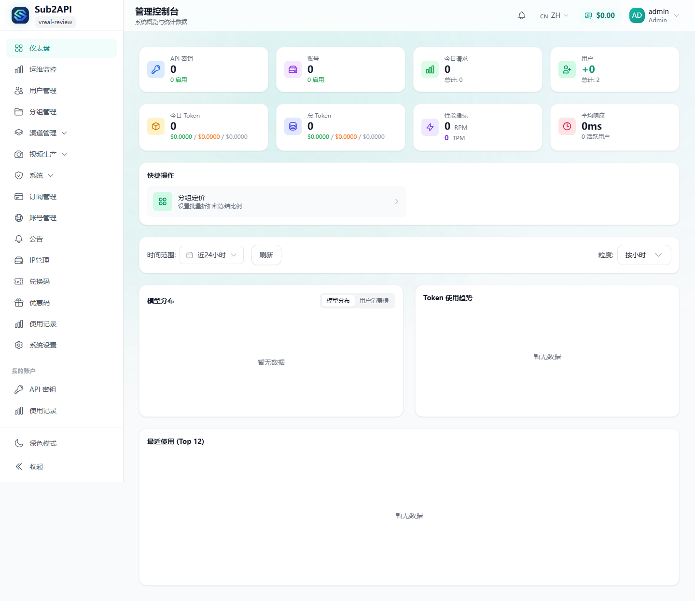
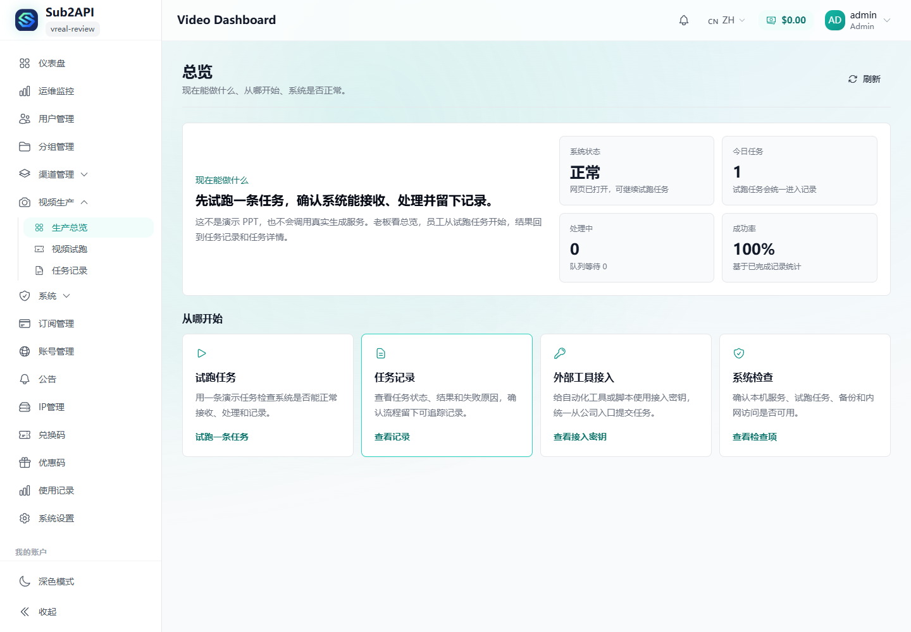
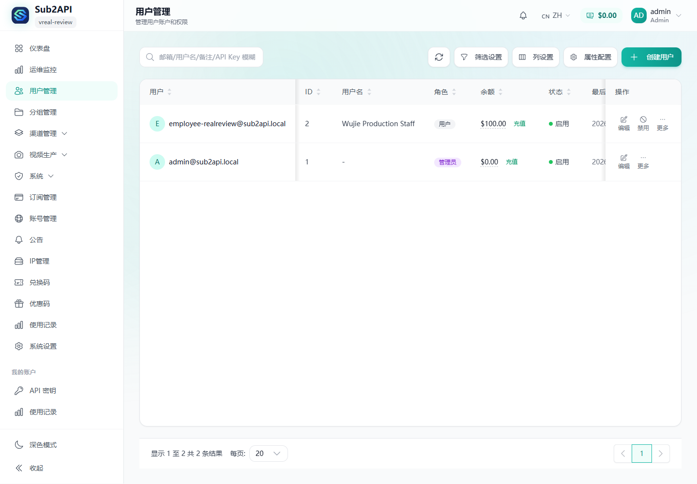
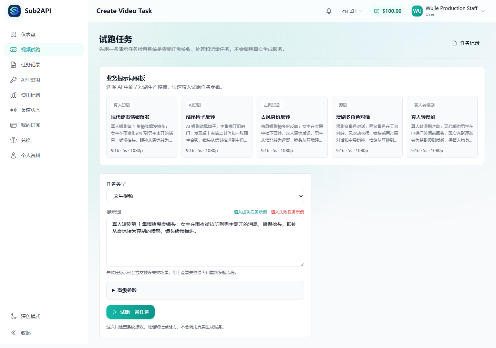
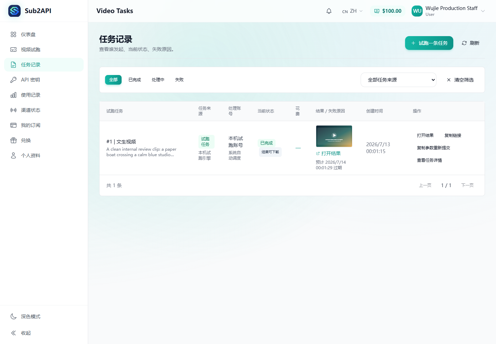
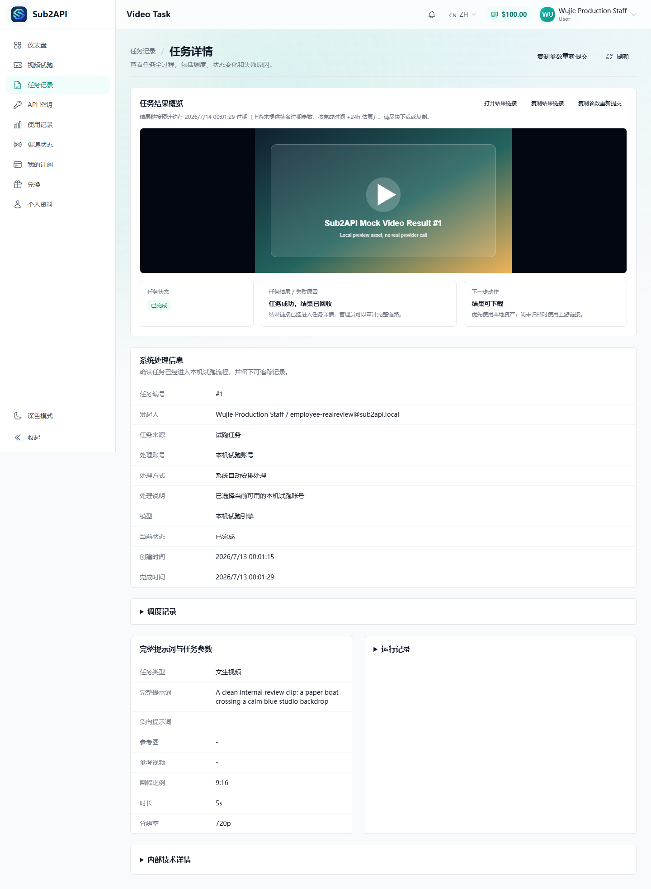
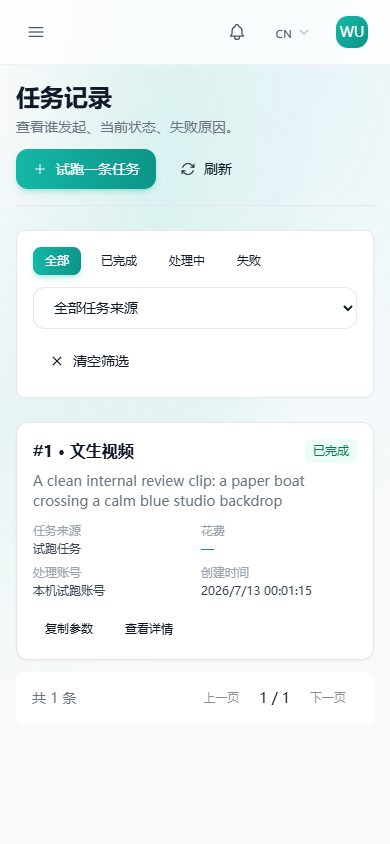

Sub2API 真实图片、视频与前端用户闭环复核
待复核 更新时间：2026-07-13
目标与执行边界
执行目录：D:\sub2api-trunk
分支：wujie/video-capture-moat-20260702
证据 HEAD：c2566a2b
授权上限：Gemini/Nano Banana 图片最多 4 次、Seedance 视频最多 4 次、累计 ¥60。实际：图片 1/4、视频 2/4、累计预留 ¥20。
未 push、未部署、未使用生产用户数据、未公开服务；本地服务仅绑定 127.0.0.1:18080。临时凭证只从 Windows 用户环境读取，不进入 Git、截图或本审查包。
关键变更
| 提交 | 作用 |
|---|---|
06020077 | 统一真实复核硬门：图片 4、视频 4、累计预留 ¥60，跨进程锁与原子状态。 |
be346bb9 / 0b277da5 | Gemini 真实 Form A 与 operation BATCH_STATE_* 状态解析。 |
798546cf | Seedance 既有任务只读恢复/资产归档；禁止 capture 未执行却误报 succeeded。 |
165d2823 | 员工视频任务权限安全、移动端卡片列表与空分页修复。 |
ca6829e0 | 真实测试不再输出带签名查询参数的结果 URL。 |
c2566a2b | mock SVG 结果使用图片证据预览，不再错误塞入视频播放器。 |
真实 Provider 证据
| 场景 | 证据 | 判定 |
|---|---|---|
| Gemini/Nano Banana | 1 次真实 Batch；上游 succeeded。修复 operation 状态解析后，对同一任务执行 Get→OpenResult→真实图片解码通过，没有第二次 create。 | 局部通过 |
| Seedance 16:9 | 5 秒、720p、24fps；1 create、46 poll、usage 108900、succeeded；同一任务恢复并归档 MP4。 | 通过 |
| Seedance 9:16 | 5 秒、720p、24fps；1 create、31 poll、usage 108900、succeeded；同一任务只读恢复并归档 1,761,009 字节 MP4。 | 通过 |
| 安全 | 真实审计/恢复日志中临时 Key 精确命中 0；审查 JSON 中 Key/密码命中 0、Authorization 命中 0；结果签名 URL 已从后续测试输出移除。 | 通过 |
当前 HEAD 与本地产品闭环
镜像：sub2api:real-review-c2566a2b
镜像 ID：sha256:0343f327b95bbd6cfecdc2c7dcc77f4f74bc86b4e6c6c39a63d428b8018edf5f
容器：healthy；app 实际进程 UID 1000。
员工 mock 任务 #1：queued → submitted → running → succeeded；创建者 ID 2；费用 0、结算 not_required、员工余额保持 ¥100；相对结果地址 HTTP 200。任务返回的是明确的 SVG 试跑证据，不是真实视频，UI 已正确区分展示。
浏览器：7 条核心路径，58 个业务 API 响应全部 2xx。员工访问管理员 Provider/老板统计接口仍为 403，员工 provider 列表只有掩码状态，不含明文 Key。
浏览器截图
{kind=link}

{kind=link}

{kind=link}

{kind=link}

{kind=link}

{kind=link}

{kind=link}

验证命令与结果
go test -tags realsmoke ./internal/service -run '^(TestFormASeedance|TestRealReviewSessionGuard)' -count=1 PASS（不设置真实开关，无付费调用） vitest run useVideoTaskLifecycle.spec.ts VideoTaskDetailView.spec.ts VideoTasksView.spec.ts 3 files / 16 tests PASS vue-tsc --noEmit PASS pnpm.cmd run build 920 modules transformed / PASS（仅既有 chunk 与 browserslist warnings） docker build -f Dockerfile.delivery --build-arg COMMIT=c2566a2b ... PASS / image sha256:0343f327... 真实 Seedance 9:16 Form A PASS / 1 create / 31 poll / succeeded / usage 108900 既有 Seedance 任务只读恢复 PASS / MP4 1,761,009 bytes / 无新增 create
浏览器网络证据原始摘要：evidence.json。
风险与未完成项
- 账务：Provider 账单、系统账本、用户余额与老板总览尚未逐条三方对账。
- 一体链：真实任务由受控 Form A memory repo 驱动，尚未进入当前本地产品数据库完成 UI 创建、结算和资产复用。
- 覆盖：Gemini 常用规格/参考图，以及 Seedance 首帧/尾帧尚未验证。
- 浏览器：员工任务列表有 1 条无头 Edge CSP inline-script 告警；同一响应 header/body nonce 一致，倾向自动化注入噪声，仍保留为风险。
- 状态：mock 成功、真实 result URL 或本地 harness 文件都不能单独证明生产可用。
回滚
使用 git revert c2566a2b 或 git revert ca6829e0 回退本轮两个独立修复；禁止 reset/clean。停止本地环境使用同一 Compose project 执行 docker compose ... down，不会影响远程环境。
下一步建议
- 先完成真实 Provider usage/账单、系统账本、员工余额和老板总览的对账方案；在此之前不继续消耗真实额度。
- 新增受共享硬门保护、写入真实 repository 的产品级真实任务 harness，让真实任务进入本地数据库并由 outbox 完成归档。
- 只在上述一体链确实需要证据时，再使用剩余图片 3 次/视频 2 次/¥40 额度；禁止循环重试。
- 复验完成后立即废弃本轮临时 Gemini 与 Seedance 凭证。
可复制后续提示词
继续 D:\sub2api-trunk 的真实复核。以 docs/reviews/LATEST_REVIEW_PACKAGE.html 为真相源。先设计并测试“真实任务写入本地 repository + outbox 资产归档 + 系统账本/用户余额/老板总览对账”的单次产品级 harness；不得打印凭证，不得绕过图片 4/视频 4/累计 ¥60 共享硬门，不得 push、部署或公开服务。只有无付费回归全绿且单次真实调用能补齐必要证据时才执行。